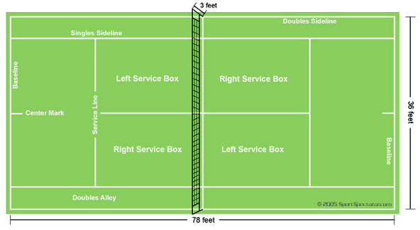

Tennis
Overview

Tennis is a sport played among two players or two pairs of players competing with each other on a rectangular tennis court. Each player has a tennis racket that is strung with cord to hit a hollow rubber ball. A net separates each side of the court. The aim is to hit the ball over the net so that it lands within a certain area on the other side of the net in a way that results in the other player being unable to return the ball.
Rules of Tennis
Coin Toss
Professional tennis matches start with a coin toss. The winner of the toss can decide either of the following: whether he wants to serve/receive first or which side of the court he wants to start on. If he chooses to serve first, his opponent gets to choose the sides each player starts on and alternately, if the winner of the coin toss decides to choose which side to start on, the other player can decide whether he wants to serve or return first. The server switches every game and the side each player plays on switches after every odd game.
Point Play
Each point begins with a serve. The server tosses the ball up over his head and hits the ball across the net so that it lands in the service box that is diagonal from the spot he served from. The point is played out, ending when either a player hits a winner, a shot that the opponent can’t touch, hits the ball into the net, or hits the ball beyond the baseline or into the alley (if it is a singles match). If the ball bounces twice on one side of the net before a player can hit it back over, that player loses the point. During the point, a player can decide whether he wants to stay close to the baseline or be more aggressive and move towards the net where he can either hit a volley or an overhead.
Scoring
Scoring is a bit weird in tennis, so to better help you understand how it works, I’ll lay out an example scenario. If player 1 hits a winner on the first point of the game, the score becomes 15-0. Player 2 then hits a shot out of bounds on the next point, making the score 30-0 in favor of player 1. But on the ensuing point, player 2 moves into the net and hits a volley winner, bringing the score to 30-15. Player 2 manages to also win the next point, tying the game score at 30-30. Finally, player 1 wins another point and the score becomes 40-30, in player 1’s favor. If he wins the next point, he would win the game, but player 2 hits a nice lob over player 1, who had gone to the net, which ties the score at 40-40. In tennis, a 40-40 score is called deuce. If either player were to win two points in a row from now, he would win the game. But let’s say player 1 wins the next point. The score would be called “advantage player 1.” Then, player 2 wins the next point, bringing the score back to deuce. This would continue until a player wins the point after earning advantage, at which point, he would win the game.
The first player who gets to six games wins a set. To win the match, a player must win three sets for a grand slam match or two sets for a non-grand slam match. A player must win by two games to take the set. However, if the score becomes 6-6, then a tiebreaker is played. A tiebreaker is played to seven points with players switching serve on every odd point. The winner of the tiebreaker wins the set.